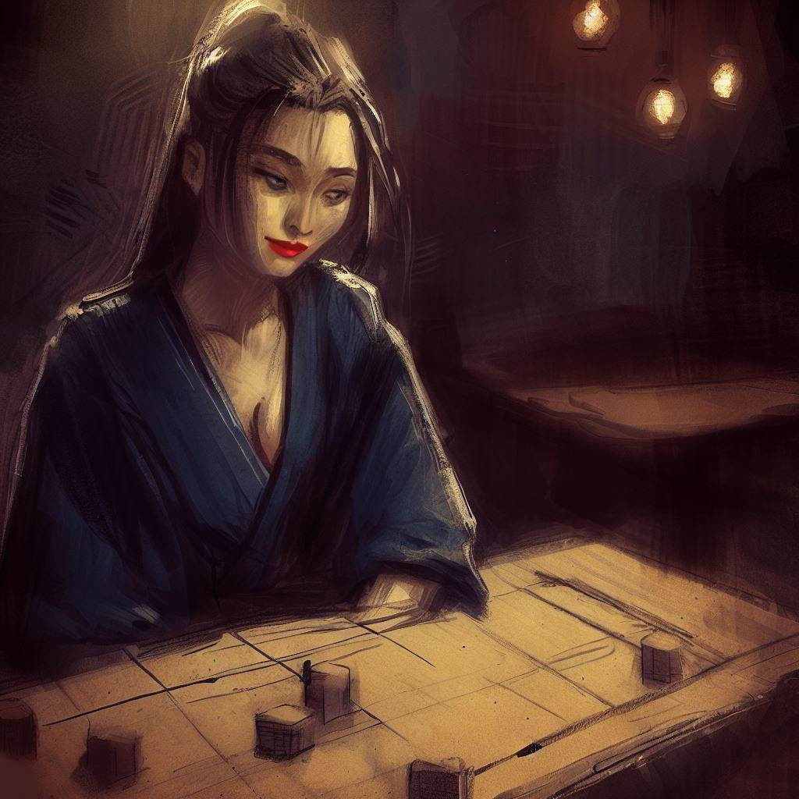
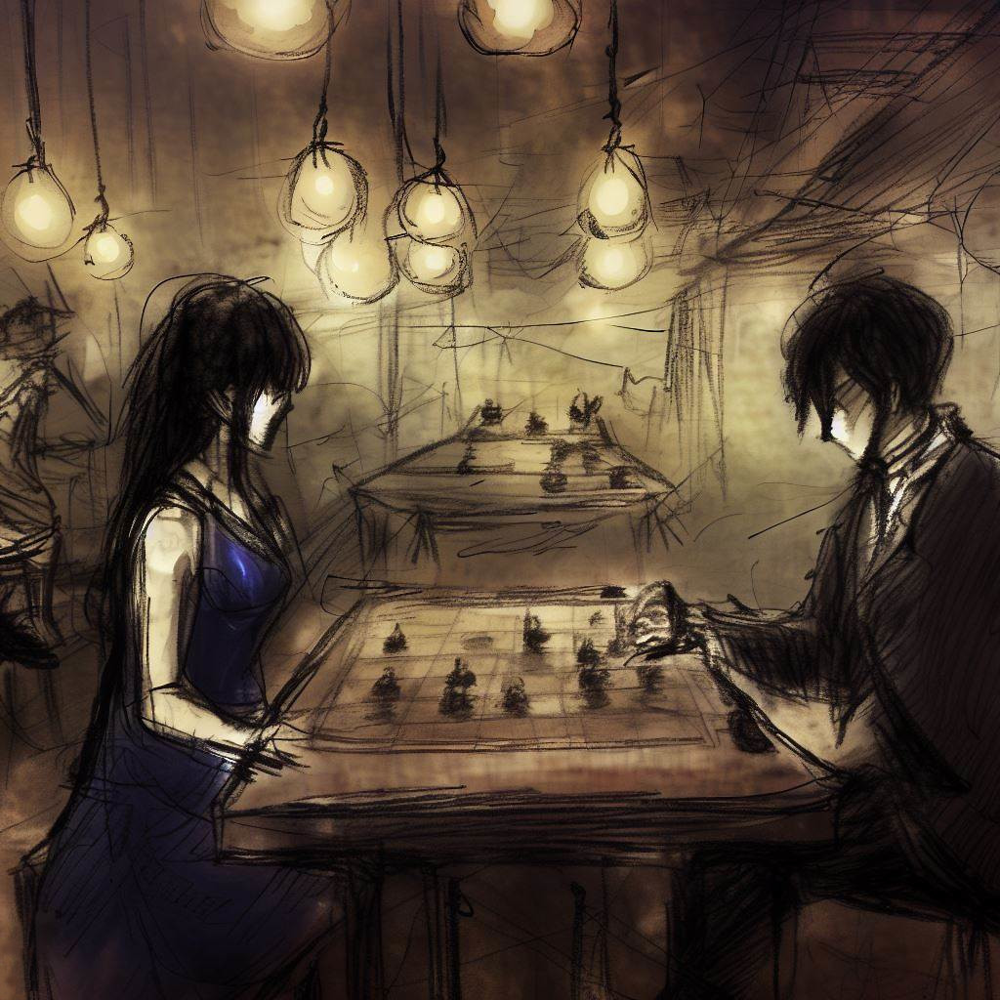
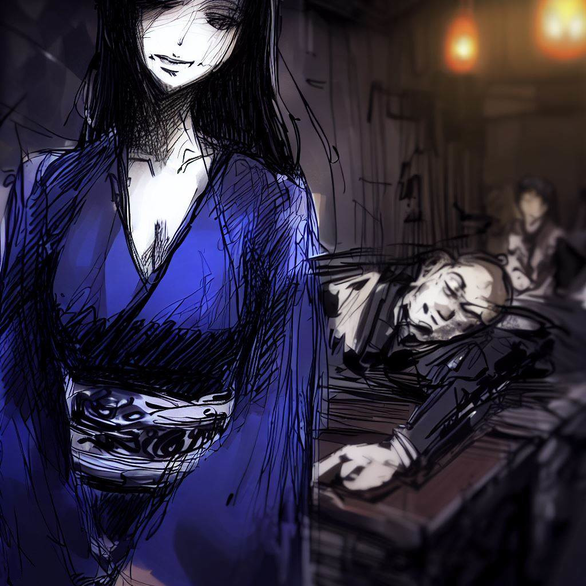

小間与:奧吉游戲的神秘回聲
我想对駒妖说谢谢。 她教了我一个非常有趣的策略游戏。 我将讲述我们的相遇。 这是我非常喜欢的一段回忆，我想在这里分享。
未知的道路
一天结束了，我离开了我的工作。我在大阪，呼吸着新鲜的晚风。城市很安静，我感到平静。
我在街上走着。建筑物很大，很亮。夜晚的它们很美。
我经过一个热闹的街区，有餐馆，人们在交谈。尽管我很累，但我想做一些有趣的事情。然后，我注意到了一个叫做Regency Bar的酒吧。这是一个人们玩将棋的地方。
我有一种想进入酒吧的冲动。我想接受一场挑战，稍微放松一下。
游戏酒吧
我进入了Regency Bar。这是一个安静的地方，灯光柔和。这里的人们正在玩将棋。
我点了一杯清酒。我四处看看。我闻到木头和香的味道。我听到将棋棋子移动的声音，人们轻声细语。
这里有各种年龄段的男人和女人在玩将棋。他们专注于他们的游戏。每次走棋，他们看起来快乐，悲伤或紧张。
我看到一位女子独自坐在一张桌子前。她美丽而平静。我对她感到好奇。我走向她，微笑着问她是否愿意和我一起玩将棋。

一种不同的游戏
当我问她是否愿意玩游戏时，她笑了。
她拿出了一个游戏板。它藏在一块布下面。我感到惊讶。那块板比平常的要小。它的方格和棋子更少。普通的将棋有9x9的格子，而它只有8x8的格子。每个玩家也只有18个棋子。在我有机会提问之前，她开始解释。她说这个游戏叫做王棋。

她谈到了一个特殊的棋子。那是王后棋子。她说这个棋子让游戏更有动感。当她看到我的惊讶时，她笑了。然后，她开始在棋盘上放棋子。
当她放置棋子时，我看到了一些不同的东西。棋盘的角落里有塔。她解释说，这些塔取代了普通将棋的枪。
当所有的棋子都在棋盘上时，我非常兴奋。我真的想玩这个新游戏。而且，我想更多地了解这个神秘的女人。
游戏测试
时钟在滴答作响。只有棋子在棋盘上移动的声音打破了寂静。棋子们决定性地移动。王后引领着游戏。游戏的寂静充满了房间。这很激烈。
那个女人玩得很好。当她捕获我的一个棋子时，她可以将它放回棋盘上，作为她自己的棋子来玩。她每走一步都是给我上的一课。她对每一个棋子都非常关注。
我继续玩。我带着大量的能量移动我的棋子。我保护我的国王。但是每走一步，我都感到更累。我的眼睛变得沉重。
最后，我再也无法保持清醒了。我太累了。一切都变得黑乎乎的。我最后看到的是那个女人的微笑。她很快乐。

令人惊讶的觉醒
我在黑暗中迷失，然后，我慢慢醒来。是早上了。我睁开眼睛。酒吧几乎没有变。
游戏板仍然在那里，就像前一天一样。但那个女人不在了。她离开了。她的缺席留下了一个空白。酒吧很安静。
我看到游戏板旁边有一张纸。我拿起纸。上面有一个词："谢谢"。还有一个名字："駒妖"。这个名字是对那个女人的最后回忆。我和她在Regency Bar度过了一个美妙的夜晚，玩着王棋。